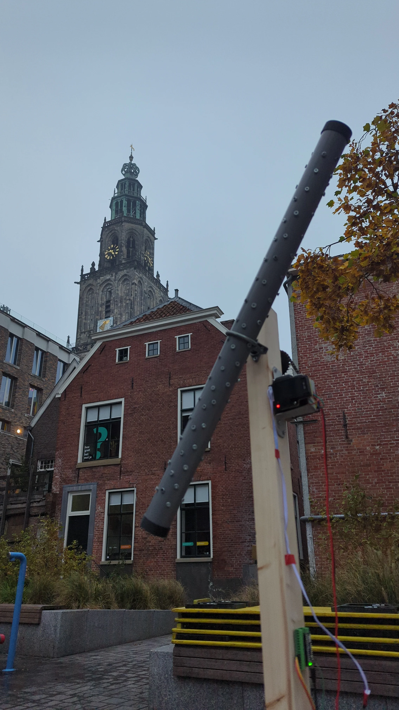

Urban Arts Tour: Extended Living Room
Kinetic Sculpture
Urban Arts Tour — Extended Living Room at Forum/Nieuwe Markt. Showed the rain-stick piece from Instruments for Becoming outdoors as a slow, weather-like kinetic work in public space.

